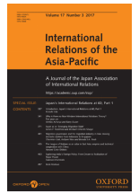
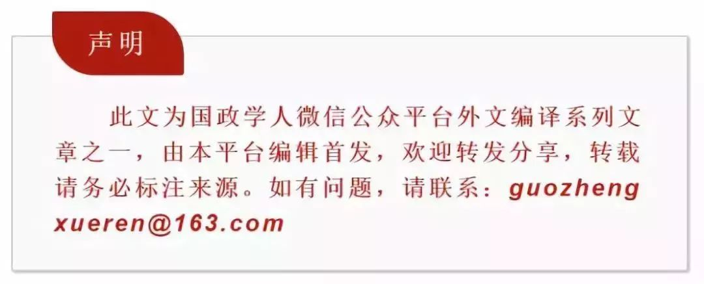

收录于合集

简 介
【作者简介】 John D.Ciorciari, 美国密歇根大学福特公共政策学院
【文章来源】 International Relations of the Asia-Pacific ,Volume: 15 ,Issue:2,Pages:245-278
【期刊介绍】

International Relations of the Asia-Pacific ，亚太国际关系，由牛津大学出版社出版，每年发行3期，主要研究方向为国际关系。
【编辑】 刘瑛琛
【校对】 李桐
核心观点
1. “赞助者-代理人”关系本质上是一种自愿的且不对等的利益交换关系，一方提供援助与保护，另一方对此进行回报。
2. 中国与柬埔寨的关系某种程度上与“赞助者-代理人”关系有着相似之处，让国际社会怀疑中国的对外援助是否为“赞助者-代理人”关系的中国模式。
3. 通过分析，我们发现中国并不愿意发展一个代理人国家，这受到国际和地区秩序、历史与国际法标准等因素的限制。
提纲
摘要
“ 赞助者-代理人”关系简介
中柬关系与 “赞助者-代理人”关系
中国发展 “赞助者-代理人”关系的限制因素
评论
摘要
中国尽管与亚洲各国有着广泛的经济联系与政治协议，甚至对地区内一些相当脆弱的政体进行了相当大的投资，但尚未发展出一个稳定且忠诚的代理人国家。本文从战略及规范层面上，探讨了那些阻碍中国培植稳固的“赞助者- 代理人”关系的因素，并以中柬关系为例，来阐述提出的本文论点，并分析这种伙伴关系的发展前景及其局限。
“赞助者-代理人”关系简介
“赞助者- 代理人”关系本质上是一种自愿且不对称的利益交换。力量较强一方提供经济援助、政治支持与军事保护，力量较弱一方则通过跟随与支持赞助者的利益进行回报。冷战时期苏联与古巴、埃及等国的关系，以及美国长期以来维持的众多代理人关系都是这一模式的典型案例。
与胁迫等其他不平等的双边关系不同，“赞助者- 代理人”关系是两厢情愿的，代理人国家愿意承担支持赞助者国家利益的风险与成本；另一方面，接受赞助并不意味着对赞助者唯命是从，代理人国家通常保有自主性。
“赞助者- 代理人”关系体现了“以可接受的成本寻求追随者”的典型现实主义逻辑，但在实施之中，力量较强一方提供的赞助与力量较弱一方的回报会受到众多因素影响，因此“赞助者- 代理人”关系在不同国家间的表现形式也各不相同。
中柬关系与“赞助者-代理人”关系
在20世纪50年代“不结盟运动”拉开帷幕之时，在西哈努克国王与毛泽东等领导人的推动下，中国与柬埔寨就建立起牢固的友谊。在其后的许多年中，中国逐渐成为柬埔寨援助的最大来源。中国向柬埔寨提供了集中在灌溉、公路、桥梁、水电站、铁路、矿山等基础设施建设方面的经济投资与众多贷款，在柬埔寨面临国际批评时对其表示了象征意义上的政治支持。与此同时，柬埔寨也对中方的这些援助作出回应，例如对中国在台湾、西藏、新疆等核心利益问题上坚定地支持中国，当东盟各国对南海提出领土要求时表明自身立场，以及洪森首相在公开场合多次对中国表示称赞等等。中国与柬埔寨的这些互动让作者提出了“中柬关系是否为‘赞助者- 代理人’关系的中国模式”的疑问，同时国际社会对中国对外援助的蓄意抹黑、中国企业在受援国当地不科学的开发等不和谐的声音也使作者对中柬关系产生了一定误解。
中国发展“赞助者-代理人”关系的限制因素
中柬关系与传统的“赞助者- 代理人”关系有着巨大不同，另一方面，国际社会对中国的对外援助政策也有一些不和谐的反馈，这使得作者开始探索中国为何不培植代理人国家的原因。
首先，中国的崛起发生在美国主导的国际秩序之下，同时美国又在亚太地区有着众多盟友。一方面，美国对中国崛起的力量有所封锁和限制，中国在这样的区域体系之下难以发展代理人过年；另一方面，与强大的近邻中国相比，远在亚欧大陆之外的霸主美国似乎更不具有威胁性，成为美国的代理人或者盟友使各国在心理上能够感受到更多的自主性。
其次，亚洲特别是东亚、东南亚各国大多有着受到中国“朝贡”体系影响的历史，其后又经历了漫长且屈辱的殖民统治，因此对外国力量极度敏感。中国同样经受过国力衰落的时期，故而对各国的顾虑深有共鸣，也不愿表现得像一个潜在的敌人或是一个傲慢的朋友。
最后，就是中国一直以来对主权与不干涉他国内政的强调，在这样的认知下，新中国在与亚非拉各国建交之初就提出并谨遵“和平共处五项原则”，这使中国不能也不会发展出前苏联或美国那样的“赞助者- 代理人”关系。
评价
本文发表于“一带一路”倡议提出之初，一定程度上代表了西方国家对中国对外政策，特别是对“第三世界”国家政策的忧虑与误解。但在事实面前，这种忧虑与误解不攻自破。我们需要注意的是，现实主义原则很好地解释了国际关系中的诸多问题，但现实主义是建立在基督教文明之上的，如果把其作为一种偏见就很难解释中国和平发展的道路了。另一方面，作者在文中反映的一些不和谐的声音，也值得我们重视起来。中国的崛起是和平的，中国的对外援助也是友好的，但我们需要科学地进行对外投资与建设，以免因缺乏管理经验而“好心办了坏事”。
*点击左下角“ 阅读原文 ”获取原文pdf版
更多阅读

国政学人 （ID：guozhengxueren)
为方便学人及时阅读高质量文章
别忘把国政学人设置 星标 哦~